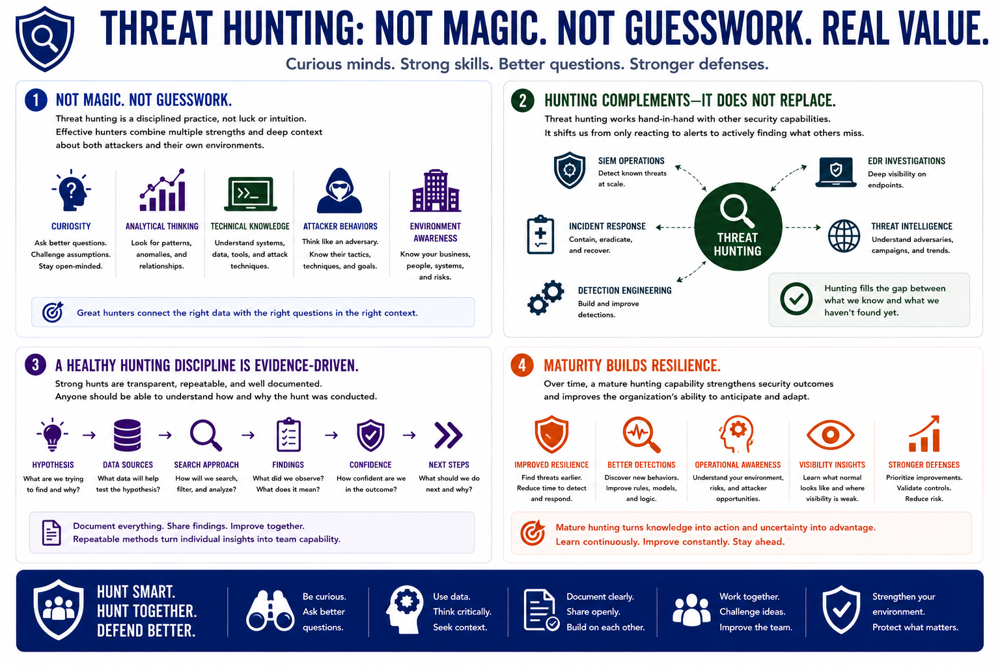

What is Threat Hunting?
Threat Hunting as a Security Discipline
Connecting to LMS... Progress: in progress
Version 1.0 | Introductory overview of defensive threat hunting practices.

Narration
Threat hunting is not magic and it is not guesswork. Effective hunters combine curiosity, analytical thinking, technical knowledge, understanding of attacker behaviors, and familiarity with organizational environments.
Hunting complements SIEM operations, EDR investigations, incident response, threat intelligence, and detection engineering. It does not replace those capabilities. Instead, it helps teams move from only reacting to alerts toward actively searching for hidden threats.
A healthy hunting discipline values evidence, documentation, repeatable methods, and feedback. Hunters should be able to explain the hypothesis, data sources, search approach, findings, confidence level, and recommended next steps.
Over time, a mature hunting capability improves resilience, detection quality, and operational awareness. It helps organizations learn what normal looks like, where visibility is weak, and where defenders should improve controls.